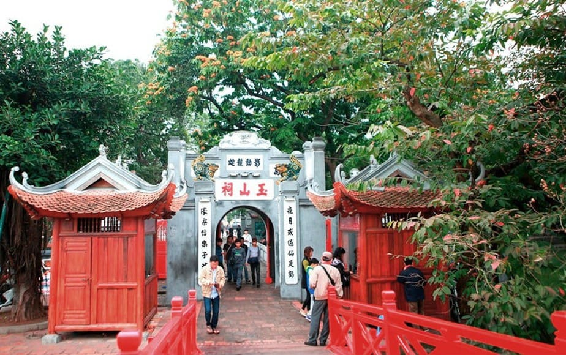

Với mục đích giúp hành khách phần nào trong việc tìm kiếm thông tin về những Danh lam thắng cảnh ở Hà Nội. Những danh lam thắng cảnh, di tích lịch sử nổi tiếng của Hà Nội như Văn Miếu – Quốc Tử Giám, Nhà Hát Lớn và Chùa Một Cột, Lăng Hồ Chí Minh, Hồ Gươm, Đền Ngọc Sơn, Hồ Tây, Chùa Hương, Bảo tàng Dân tộc học…
ĐỀN NGỌC SƠN
Đền Ngọc Sơn một ngôi đền nằm trên Hồ Gươm ẩn sau những bóng đa cổ thụ với chiếc cầu Thê Húc màu đỏ son cong cong. Với sự kết hợp hai hòa giữ đền và hồ tạo nên một tổng thể kiến trúc hợp nhất, mang lại một không gian hòa hợp giữa người và thiên nhiên.

Bạn khi đến Hồ Gươm vẫn thường hay đi vào Đền Ngọc Sơn để thắp hương cầu nguyện những điều tốt đẹp nhất đến với mình.
NHÀ HÁT LỚN HÀ NỘI
Nhà hát lớn là một công trình được xây vào đầu thế kỉ 20 nằm giữa ngã tư Tràng Tiền và Ngô Quyền. Đến nay đây vẫn là công trình kiến trúc văn hóa bậc nhất của thủ đô.

Nhà hát lớn được thiết kế theo phong cách cổ điển Pháp với rất nhiều đường nét đặc trưng. Hiện nay nhà hát lớn đã và đang trở thành trung tâm văn hóa diễn ra nhiều sự kiện sân khấu nghệ thuật ở VN.
HỒ GƯƠM – THÁP RÙA
Danh lam thắng cảnh phải nói đến đầu tiên là Hồ Gươm(Hồ Hoàn Kiếm). Đây là hồ tọa lạc ở vị trí trung tâm TP Hà Nội được coi là tría tim của thủ đô. Tên gọi của nó gắn liền với sự tích trả gươm thần của vua Lê Lợi cho Rùa Vàng của người Việt Nam. Mặt hồ xanh rêu như một tấm gương soi bóng những hàng cây cổ thụ cành lá sum suê và hàng liễu rủ thướt tha xung quanh hồ.

Giữa lòng hồ Gươm là tháp Rùa cổ kính lung linh, có lịch sử rất lâu đời và nó cũng là biểu tượng của người dân Hà Nội. Ngoài ra quanh Hồ Gươm cũng là địa điểm thường diễn ra những sự kiện văn hóa, biểu diễn nghệ thuật, bắn pháo hoa… Đây chắc chăn là địa điểm du lịch các bạn phải ghé thăm khi đến đây.
NHÀ THỜ LỚN HÀ NỘI
Đây là nhà thờ lớn nhất nằm trong khu vực phố cổ Hà Nội, nó được thiết kế theo phong cách Gothic là nơi sinh hoạt tôn giáo của rất nhiều người. Đến đây bạn sẽ cảm giác như đi thăm các lâu đài cổ kính ở châu Âu với những đường nét đầy lôi cuốn và những bức tranh trên kính rực rỡ.

Với lối kiến trúc đẹp nhà thờ Lớn hàng năm thu hút rát nhiều du khách đến thăm quan và chiêm ngưỡng. Ngoài ra đây cũng là nơi tụ tập của giới trẻ thủ đô mỗi buổi đêm về.
HỒ TÂY
Hồ Tây là hồ lớn nhất tại Hà Nội với hơn 500ha với cung đường hồ dài 17km. Nếu có điều kiện bạn nên dùng xe máy đi một vòng quanh Hồ Tây, để ngắm toàn cảnh sự lãng mạng bên mặt hồ trong xanh, kết hợp với những cơn gió mát rượi.
CHÙA MỘT CỘT
Nằm ngay lăng chủ tich Hồ Chí Minh, chùa một cột là một thắng cảnh độc đáo, thu hút rất nhiều du khách đến thăm quan và chiêm ngưỡng hàng năm. Với kiến trúc đẹp, lạ mắt(kết cấu hình vuông nằm trên trụ đá giữa hồ sen) tạo nên vẻ đẹp tựa như một đóa hoa sen nổi lên giữa mặt hồ.

CHÙA TRẤN QUỐC
Đây có thể coi là một ngôi chùa cổ nhất Hà Nội, với lịch sử hơn 1000 năm chùa Trấn Quốc thắng cảnh bậc nhất kinh kỳ. Chùa không chỉ giữ đgìn được giá trị kiến trúc mà còn là nhân chứng lịch sử chứng kiến bao thăng trầm của lịch sử dân tộc Việt Nam. Nên hiện nay chùa Trấn Quốc là địa điểm không chỉ thu hút được các Phật tử mà còn chào đón rất nhiều lượt khách thăm quan hàng năm.
VĂN MIẾU QUỐC TỬ GIÁM
Văn miêu được coi là trường đại học đầu tiên tại Việt Nam, nơi diễn ra rất nhiều các kỳ thi lớn trong thời phong kiến. Quần thể sở hữu các kiến trúc cổ đặc sắc, hài hòa với thiên nhiên bao quanh bởi cây lá xum xuê mang lại cảnh sắc khác lạ giữa lòng thủ đô.
LĂNG CHỦ TỊCH HỒ CHÍ MINH
Lăng chủ tịch Hồ Chí Minh chắc chắn là nơi bạn phải đến, đây là nơi có ý nghĩa lịch sử đối với người Việt Nam. Nơi chủ tịch Hồ Chí Minh đã đọc bản tuyên ngôn độc lập khai sinh ra nước Việt Nam dân chủ cộng hòa.
Ngày nay đây là nơi an nghỉ vĩnh hằng của vị lãnh tụ vĩ đại của dân tộc Việt Nam, được bao quanh bởi khuôn viên vườn cây và ao cá.
CỘT CỜ HÀ NỘI
Đây là kiến trúc được xây vào năm 1805 và hoàn thành 1812 bao gồm 3 tầng được coi là biểu tượng của thành phố Hà Nội.
Nơi đây được công nhận là di tích lịch sử vào năm 1989 với mốc dấu lịch sử là ngày 10/10/1954 lá cở đỏ sao vàng(quốc kỳ của nước Việt Nam) lần đầu tiên tung bay trên đỉnh cột cờ. Hiện nay kiến trúc này đang nằm trên đường Điện Biên Phủ quận Ba Đình Hà Nội.
Ô QUAN CHƯỞNG
Ô quan Chưởng hay còn gọi là ô Đông Hà là một trong 21 cửa ô còn sót lại của thành Thăng Long xưa.
Ô quan Chưởng được xây dựng vào năm Cảnh Hưng thứ 10(1749) đến năm Gia Long thứ 3(1817) và được giữ lại nguyên hình dáng kích thước cho đến nay.
CẦU LONG BIÊN
Cầu Long Biên là cầu thép đầu tiên Bắc qua sông Hồng, được xây dựng trong 3 năm (1899-1902) trong thời kỳ Pháp thuộc. Vào những năm đầu thế kỷ 20 cây cầu này là cây cầu dài thứ hai thế giới, được người Pháp mệnh danh là:”Tháp Eiffel nằm ngang”
Cầu Long Biên là nhân chứng lịch sử của hai cuộc kháng chiến chống Pháp và Mỹ của dân tộc.
Với hơn 100 năm tồn tại, cây cầu đã có nhiều dấu vết của thời gian nên nó là biểu tượng trường tồn trong sự phát triển tương lại của xã hội.
HOÀNG THÀNH THĂNG LONG
Hoàng thành Thăng Long là quần thể di tích gắn với lịch sử phong kiến Việt Nam. Bắt đầu từ thời kỳ tiền Thăng Long và phát triển mạnh dưới thời kỳ Lý, Trần, Lê và được đổi thành Hà Nội dưới triều Nguyễn.
Tháng 8/2010 Ủy ban di sản thế giới đã công nhận khu Trung tâm hoàng thành Thăng Long là di sản văn hóa thế giới.
THĂNG LONG TỨ TRẤN
“Thăng Long tứ trấn” là tên gọi của bốn ngôi đến thiêng trấn giữ các hướng Đông Tây Nam Bắc của Thăng Long. Tên gọi các ngôi đền lần lượt là: Đền Bạch Mã(trấn Đông); Đền Voi Phục (trấn Tây); Đền Kim Liên (Trấn Nam); Đền Quán Thánh (Trấn Bắc).
Bốn ngôi Đền này không chỉ có bề dày lịch dử mà còn ảnh hưởng sâu đến đời sống tâm linh của người Hà Nội xưa. Hiện nay vào các dịp lễ tết tại đây có rất nhiều người đến thắp hương và thăm quan.
THÀNH CỔ LOA
Đây là di tích duy nhất không năm trung tâm thành phố Hà Nội, thành Cổ Loa nằm trên địa phận 3 xã Cổ Loa, Dục Tú và Việt Hùng thuộc huyện Đông Anh (Hà Nội) cách trung tâm Hà Nội khoảng 17km về phía Bắc.
Thành Cổ Loa có diện tích khoảng 500ha được coi là địa chỉ văn hóa đặc biệt của thủ đô và cả nước thể hiện truyền thống giữ nước chông giặc ngoại xâm của dân tộc.
Nguồn sưu tầm internet